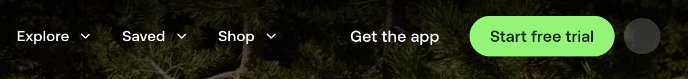
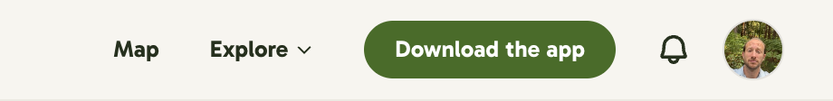
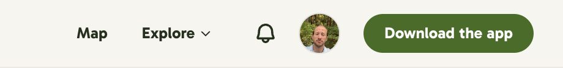

De balk: afstanden en de bel
Gemeten op de echte balken, in jouw Chrome (ingelogd waar je dat bent). De ontwerpen hieronder zijn jouw live balk met aangepaste afstanden, nog niets gebouwd.
Gemeten
| Afstand tussen items | Icoon | Profielfoto | Volgorde rechts | |
|---|---|---|---|---|
| Wij nu | 20 px tussen de vakjes, maar de vakjes zijn ongelijk (tekst zonder ruimte, bel in een cirkel van 36): zichtbaar 20, 28, 28, 20 | bel 20 px | 32 px | Map, Explore, bel, gezicht, Download |
| AllTrails | elk item een vak van 36 hoog met eigen ruimte erin, vakken 4 tot 8 px uit elkaar: zichtbaar overal gelijk | geen bel | 32 px | menu's, Get the app, Start free trial, gezicht als laatste |
| YouTube | knoppen van 40, 8 px uit elkaar | bel 24 px in 40 | 32 px | Maken, bel, gezicht als laatste |
| Strava | (niet ingelogd, niet gemeten) help: de bel staat naast je profielfoto, rechtsboven | bel, gezicht | ||
Wat scheef voelt: de ruimte zit nu tússen ongelijke vakjes, dus het oog ziet 20, 28, 28, 20. De anderen geven elk item een even hoog vak met de ruimte erin, dan oogt alles even ver uit elkaar. En je gezicht staat bij hen helemaal rechts.
Nu
Referentie: AllTrails (jouw Chrome)

A: gelijke afstanden, gezicht als laatste (AllTrails, YouTube)

Map en Explore in vakken van 36 hoog met 12 px ruimte, vakken 4 px uit elkaar; dan de knop; dan bel en gezicht, beide 40 rond, 4 px uit elkaar. Bel 19 px (was 20) en grijs rondje bij aanwijzen, zoals YouTube.
B: gelijke afstanden, jouw volgorde (bel, gezicht, knop)

Zelfde maten, de knop blijft rechts.
Advies
A. Dan staan de twee persoonlijke dingen (bel en gezicht) samen in de hoek waar iedereen ze zoekt, en de knop "Download the app" staat bij de rest van de navigatie.